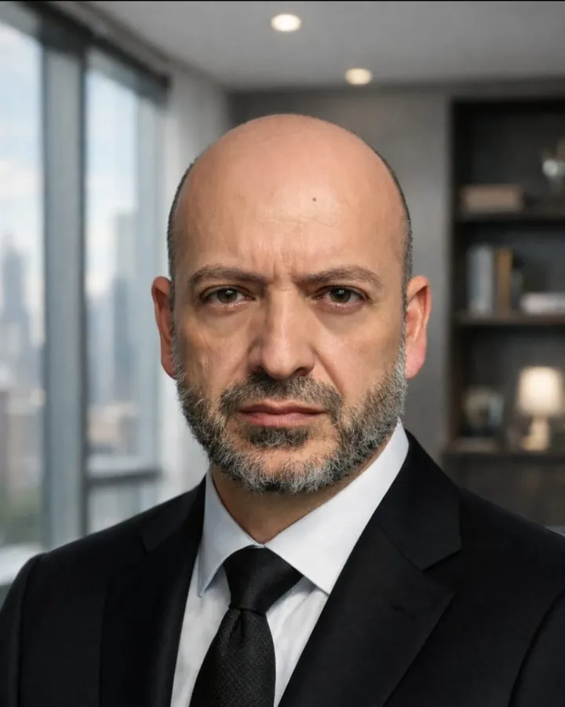

עו"ד חגי פ. כהן
מייסד ומנהל המשרד, נוטריון

תחומי עיסוק והתמחות
עו"ד כהן ייסד את המשרד בשנת 2001 ומנהל אותו מאז. הוא משמש יועץ משפטי לעשרות מועצות דתיות ולחברות הקדישא הפועלות בהן, ועוסק במשפט המנהלי, בדיני העבודה במגזר הציבורי, במכרזים וברגולציה של שירותי הדת. מאז 2004 הוא חבר בוועדה הממונה על המועצה הדתית ירושלים.
בתחום הליטיגציה הוא מטפל, בין היתר, במחלוקות על התקשרויות של גופים ציבוריים, בסכסוכי עבודה במגזר הציבורי, בסוגיות סמכות ואחריות ברשויות ובמועצות דתיות, בענייני קניין ומקרקעין, במכרזים ובעתירות מנהליות.
השכלה והכשרה
- 1999
- LL.B. במשפטים, אוניברסיטת בר-אילן (מסלול החטיבה העסקית)
- 2000
- התמחות במשרד עורכי הדין דויטשר-ברקן, והסמכה לעריכת דין
- 2003
- אישור לשמש סניגור בבתי הדין הצבאיים
- 2007
- השתלמויות תעודה של לשכת עורכי הדין בבוררות ובליטיגציה
- 2016
- קורס נוטריון מטעם משרד המשפטים
תפקידים ציבוריים
חבר הוועדה הממונה על המועצה הדתית ירושלים מאז 2004, ומורשה חתימה מטעמה.
פרסומים
מאמר שהוגש לכתב עת משפטי
- חגי פ. כהן, "פקיעת האפוטרופסות במות האדם והחלל הנורמטיבי בסמכות ההכרעה בקבורה ובמצבה במשפט הישראלי", הוגש לכתב העת מחקרי משפט (אוניברסיטת בר-אילן), בהליך שיפוט.
מאמרים באתר המשרד
קבורה וחברות קדישא
- חגי פ. כהן, "החוזר המאוחד תשפ"ו-2026 וחברות הקדישא: מעמד, פרשנות ותנאי רישיון", 6.11.2026.
- חגי פ. כהן, "קבורה ללא תשלום וחלקה חריגה: היקף הזכות, תחום הטיפול וגבולות הגבייה", 6.11.2026.
- חגי פ. כהן, "בית עלמין סגור, קבורת על, מכפלה והיתר בנייה: ניתוח משפטי", 6.11.2026.
- חגי פ. כהן, "הזכות בחלקת קבר: מהותה, הביקורת על הקצאתה והסעדים בשלה", 6.11.2026.
- חגי פ. כהן, "תביעות בגין ניהול בית עלמין: הנתבע הנכון, זכות התביעה, מבנים על קברים וצווי מניעה", 6.11.2026.
- חגי פ. כהן, "קבורת נפלים, עוברים ותינוקות: חובות גוף הקבורה, זכויות המשפחה וחלוף הזמן", 6.11.2026.
כשרות
- חגי פ. כהן, "תיקון מס' 5 לחוק איסור הונאה בכשרות: שאלות של סמכות, אגרה והעסקה", 6.11.2026.
- חגי פ. כהן, "מי מעסיק משגיח כשרות? זיהוי המעסיק, הסרת אמון ותיקון מס' 5", 6.11.2026.
מועצות דתיות: מקוואות, תקציב ובחירות
- חגי פ. כהן, "מקוואות במועצה הדתית: היקף החובה, העובדות והמימון החיצוני", 6.11.2026.
- חגי פ. כהן, "רשות מקומית ומועצה דתית: מעמד, השתתפות בתקציב, גניזה וחובות ישנים", 6.11.2026.
- חגי פ. כהן, "מועצה דתית בתקופת בחירות: דיני התעמולה, גבולות הסמכות והסעד המידתי", 6.11.2026.
דיני עבודה
- חגי פ. כהן, "עובד אחד, חמש מערכות דין: שימוע ופיטורים של עובד מועצה דתית", 6.11.2026.
- חגי פ. כהן, "פנסיה, רציפות זכויות והתיישנות: רבני ערים ועובדי מועצות דתיות", 6.11.2026.
- חגי פ. כהן, "שכר כמו ברשמי: גבולות חובת ההשוואה בעובדי הוראה במוסד מוכר שאינו רשמי", 6.11.2026.
- חגי פ. כהן, "פיצויי פיטורים, סעיף 14 וצו ההרחבה לפנסיה חובה: מתי ההפרשות באות במקום הפיצויים וכיצד מחשבים", 6.11.2026.
מכרזים
- חגי פ. כהן, "מכרזים במועצה הדתית: הדין החל, פסילת הצעות, ערבויות ופטורים", 6.11.2026.
משפט מנהלי והליכים
- חגי פ. כהן, "חוק חופש המידע והמועצה הדתית: חובת המסירה וגבולותיה", 6.11.2026.
- חגי פ. כהן, "טענות הסף בעתירה נגד מועצה דתית, חברה קדישא ורשות ציבורית", 6.11.2026.
- חגי פ. כהן, "סעד זמני נגד גוף ציבורי: מבחני הסיכויים ומאזן הנוחות", 6.11.2026.
- חגי פ. כהן, "תביעה קטנה נגד מועצה דתית: סמכות, הנתבע הנכון ואחריות אישית", 6.11.2026.